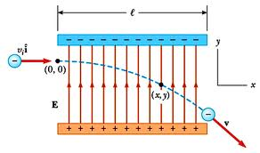

"
The hardest thing in the world to understand is the income tax"
Albert Einstein
Having determined the electric field we now want to determine
the behaviour of a point charge, q0, placed in this
field.
The force on the charge is given by F = q0E.
But Newton's second law tells us that F = ma, so
that the acceleration of the particle can be written, a
= (q0/m)E.
Once we have an expression for the acceleration it is usually
possible to determine the trajectory of the particle, although
in the general case this will involve solving differential
equations. However, when E is constant the
acceleration is constant which allows us to use the kinematic
equations describing motion under constant acceleration from the
beginning of the first semester of this course (Physics
298). Important equations in Physics should never be
forgotten .
In two dimensions, with E constant in one direction
and zero in the other, charged particle motion can be treated in
the same way as projectile motion of a particle under the
influence of a (constant) gravitational field.

What do you get if you have Avogadro's
number of donkeys?
Answer: molasses (a mole of asses)